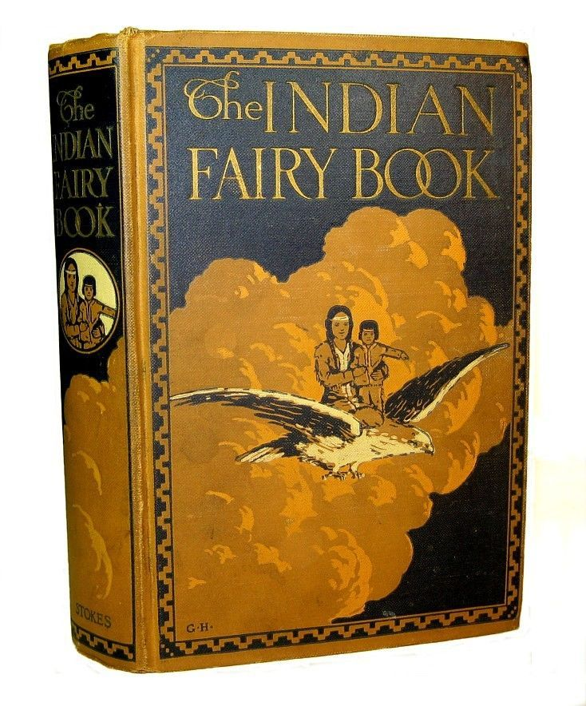
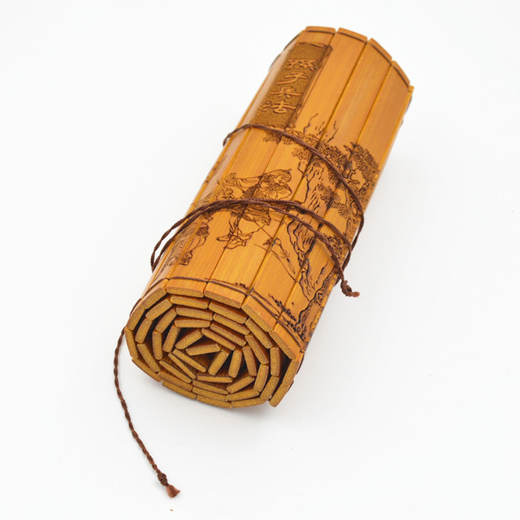
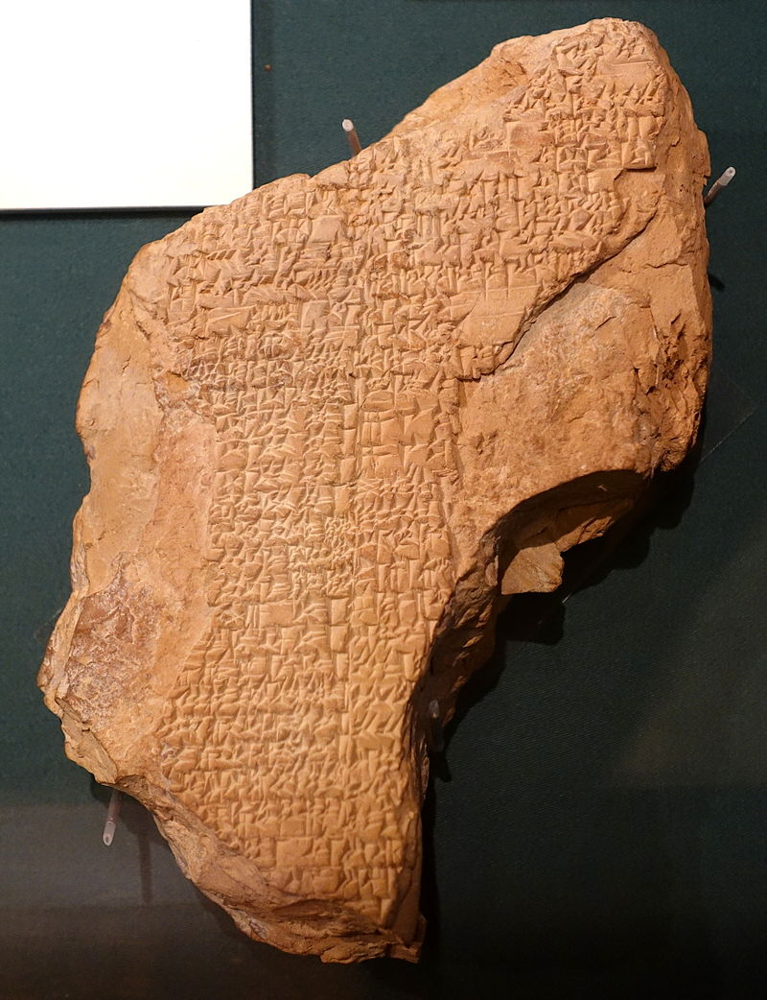
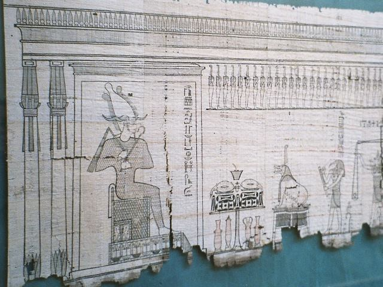
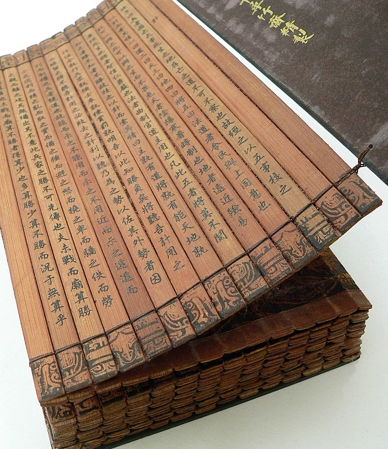
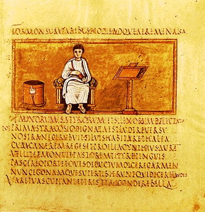

A book is a series of pages assembled for easy portability and reading, as well as the composition contained in it. The book's most common modern form is that of a codex volume consisting of rectangular paper pages bound on one side, with a heavier cover and spine, so that it can fan open for reading. Books have taken other forms, such as scrolls, leaves on a string, or strips tied together; and the pages have been of parchment, vellum, papyrus, bamboo slips, palm leaves, silk, wood, and other materials.
When writing systems were created in ancient civilizations, a variety of objects, such as stone, clay, tree bark, metal sheets, and bones, were used for writing; these are studied in epigraphy.
"One of the things that attracts me to vintage and antique things is they have stories, and even if I don't know the stories, I make them up."
A tablet is a physically robust writing medium, suitable for casual transport and writing. Clay tablets were flattened and mostly dry pieces of clay that could be easily carried, and impressed with a stylus. They were used as a writing medium, especially for writing in cuneiform, throughout the Bronze Age and well into the Iron Age. Wax tablets were pieces of wood covered in a thick enough coating of wax to record the impressions of a stylus. They were the normal writing material in schools, in accounting, and for taking notes. They had the advantage of being reusable: the wax could be melted, and reformed into a blank
Scrolls can be made from papyrus, a thick paper-like material made by weaving the stems of the papyrus plant, then pounding the woven sheet with a hammer-like tool until it is flattened. Papyrus was used for writing in Ancient Egypt, perhaps as early as the First Dynasty, although the first evidence is from the account books of King Nefertiti Kakai of the Fifth Dynasty (about 2400 BC).[11] Papyrus sheets were glued together to form a scroll. Tree bark such as lime and other materials were also used.
A codex (in modern usage) is the first information repository that modern people would recognize as a "book": leaves of uniform size bound in some manner along one edge, and typically held between two covers made of some more robust material. The first written mention of the codex as a form of book is from Martial, in his Apophoreta CLXXXIV at the end of the first century, where he praises its compactness. However, the codex never gained much popularity in the pagan Hellenistic world, and only within the Christian community did it gain widespread use.[14] This change happened gradually during the 3rd and 4th centuries, and the reasons for adopting the codex form of the book are several: the format is more economical, as both sides of the writing material can be used; and it is portable, searchable, and easy to conceal. A book is much easier to read, to find a page that you want, and to flip through. A scroll is more awkward to use. The Christian authors may also have wanted to distinguish their writings from the pagan and Judaic texts written on scrolls. In addition, some metal books were made, that required smaller pages of metal, instead of an impossibly long, unbending scroll of metal. A book can also be easily stored in more compact places, or side by side in a tight library or shelf space
The fall of the Roman Empire in the 5th century A.D. saw the decline of the culture of ancient Rome. Papyrus became difficult to obtain due to lack of contact with Egypt, and parchment, which had been used for centuries, became the main writing material. Parchment is a material made from processed animal skin and used—mainly in the past—for writing on. Parchment is most commonly made of calfskin, sheepskin, or goatskin. It was historically used for writing documents, notes, or the pages of a book. Parchment is limed, scraped and dried under tension. It is not tanned, and is thus different from leather. This makes it more suitable for writing on, but leaves it very reactive to changes in relative humidity and makes it revert to rawhide if overly wet.
